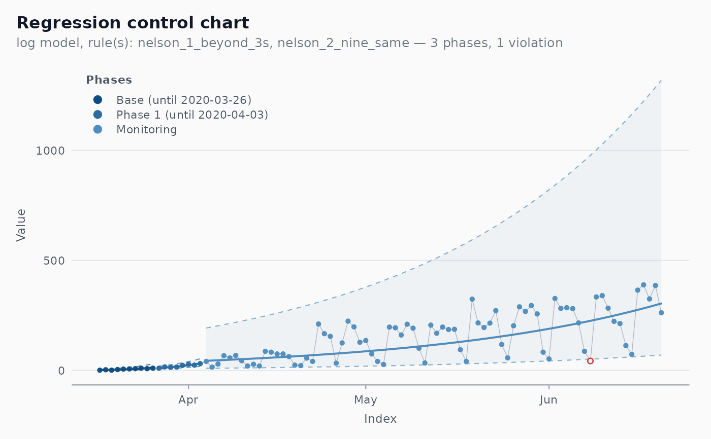

Daily count of new COVID-19 deaths officially recorded for Brazil
as a whole, for the state of Pernambuco and for the state of Sao
Paulo, from 25 February 2020 (Pernambuco: 12 March 2020, its first
record) to 31 December 2020. These are the series analysed by
Ferraz et al. (2020) with the regression chart on the log scale
(shewhart_regression(model = "log", limits_scale = "model")).
Format
A tibble with 917 rows and 3 columns, in long format (one row per region and day, sorted by region then date):
- date
Date of the bulletin.
- region
Factor with levels
"BR"(Brazil),"PE"(Pernambuco) and"SP"(Sao Paulo).- new_deaths
Integer count of new deaths reported that day.
Source
Wesley Cota, covid19br: number of confirmed cases and deaths
by COVID-19 in Brazil (https://github.com/wcota/covid19br),
compiled from the Brazilian Ministry of Health bulletins
(https://covid.saude.gov.br). See data-raw/build_all.R.
Details
Values are kept exactly as published. The Pernambuco series has one
negative value, new_deaths = -37 on 2020-09-03: a bulletin that
revised the cumulative total downwards. Log-scale models reject it
(log(1 + y) is undefined), so filter or reconcile it before
fitting a chart that spans that date, e.g.
subset(cvd_brazil, region == "PE" & new_deaths >= 0).
The articles used the Ministry of Health bulletins as available on 20 June 2020 (Revista Brasileira de Estatistica) and 24 July 2020 (SBPO). Later bulletins revised some days, so this snapshot can differ slightly from the data behind the published figures, and phase dates may move by a day or two.
References
Ferraz, C., Petenate, A. J., Leite Wanderley, A., Ospina, R., Torres, J., & Peruzzi Moreira, A. (2020). COVID-19: monitoramento por graficos de Shewhart. Revista Brasileira de Estatistica, 78(245), 23-41.
Examples
table(cvd_brazil$region)
#>
#> BR PE SP
#> 311 295 311
# \donttest{
sp <- subset(cvd_brazil, region == "SP" & date >= as.Date("2020-03-17") &
date <= as.Date("2020-06-20"))
fit <- shewhart_regression(sp, value = new_deaths, index = date,
model = "log", limits_scale = "model",
phase_rule = "we_seven_same")
ggplot2::autoplot(fit, legend_position = "inside")

# }